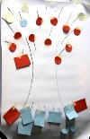
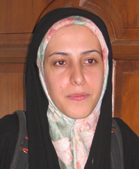

تغییر برای برابری
تغییر برای برابریوبلاگ کمپین کردستان نیز اغاز به کار کرد
http://kurdsincampain.blogfa.com/
گزارش و عکس : ژینا مدرس گرجی
تغییر برای برابری - زنان در کردستان سوای خشونتهای مشترک با دیگر زنان، درگیر خشونتهای خاص دیگری نیز هستند. براساس نیاز شدید زنان و به منظور شناخت خشونت و انواع آن، تبادل تجربه و راهکارهای مقابله با خشونت، کارگاه آموزشی خشونت در سنندج برگزار شد. این کارگاه در تاریخ 26 بهمن ماه به مدت 5 ساعت و با همکاری دو نفر از اعضای کمپین یک میلیون امضا تهران و سنندج و با شرکت 32 نفر شرکت کننده برگزار شد.
در این کارگاه جمعی از زنان فعال سنندج، زنان خشونت دیده و (...)
پذيرش > واژه كليدها > صفحه بندی > گزارش ویژه
گزارش ویژه
مقالهها
-

روایات زنانی که هر روز این چرخه را تجربه میکنند، گزارش کارگاه خشونت درسنندج / ژینا مدرس گرجی
18 فوريه 2009, بوسيلهى pari -
شیرین عبادی: در تمام مراحل این بازداشت تخلف صورت گرفته است
28 مارس 2009تغییر برای برابری: دوازده تن از فعالان جنبش زنان، خدیجه مقدم، فرخنده احتسابیان، لیلا نظری، دلارام علی، محبوبه کرمی، شهلا فروزانفر، ثریا یوسفی، امیر رشیدی، محمد شوراب، آرش نصیری اقبالی و علی عبدی، عصر روز پنج شنبه 6 فروردین در حالی که تصمیم داشتند به دیدار نوروزی با خانواده های برخی از زندانیان بروند در خیابان سهروردی تهران دستگیر و به زندان اوین منتقل شدند. بازداشت این افراد به رغم صدور قرار کفالت همچنان ادامه یافته و باوجود پیگیری های انجام شده و مراجعه کفیل آنان به دادگاه، امکان آزادی آنها فراهم نشده است. شیرین عبادی، حقوقدان و رئیس کانون مدافعان حقوق بشر (...)
-
 نامه سازمانهای بین المللی برای آزادی عالیه اقدام دوست و در دفاع از فعالان حقوق زن به دولت ایران
نامه سازمانهای بین المللی برای آزادی عالیه اقدام دوست و در دفاع از فعالان حقوق زن به دولت ایران
10 آوريل 2009, بوسيلهى pariآقای دکتر محمود احمدی نژاد
رییس جمهور
خیابان فلسطین، تقاطع آذربایجان
تهران، جمهوری اسلامی ایران عالیجناب، ما؛ اعضای ائتلاف بین المللی زنان مدافع حقوق بشر، با امضای این بیانیه عمیق ترین نگرانی های خود را در مورد زندانی بودن عالیه اقدام دوست، و همچنین بازداشت اخیر 12 مدافع حقوق بشر در ایران ابراز می داریم. عالیه اقدام دوست به همراه دهها نفر از فعالان دیگر در تجمع دفاع از حقوق زن در تهران در خرداد ماه 1385 بازداشت شد. در روز 15 تیرماه 1386، عالیه اقدام دوست به سه سال و چهارماه زندان و 20 ضربه شلاق محکوم شد. در دادگاه تجدید نظر، دوران محکومیت زندان (...) -

احضار مریم مالک عضو کمپین به پلیس امنیت و تفتیش منزل او
24 آوريل 2009, بوسيلهى pariتغییر برای برابری - مریم مالک از اعضای کمپین یک میلیون امضا به شعبه 14پلیس امنیت ناتب، مرکز پشتیبانی عملیات واقع در خیابان شریعتی احضار شد. احضار او با ورود ماموران پلیس امنیت به منزل و تفتیش منزل پدری او همراه بود. مریم مالک باید 8 و 30 دقیقه صبح شنبه پنجم اردیبهشت 1388در دفتر پلیس امنیت حاضر شود.
ماموران پلیس امنیت روز چهارشنبه دوم اردیبهشت با حکم تفتیش به منزل پدری مریم مالک رفته و در همان حال احضاریه را نیز به او دادند و تهدید کردند که اگر نرود برایش حکم جلب صادر می کنند. مریم مالک که همان روز پس از چند روز بستری در بیمارستان تازه مرخص شده بود در این (...) -
راهپیمایی منسجم زنان افغانستان: برابری حق ماست/نادیه فضل
15 آوريل 2009, بوسيلهى pariتغییر برای برابری - امروز چهارشنبه پانزدهم ماه آپریل 2009 میلادی برابر به بیست و ششم فروردین سال 1388 خورشیدی، جمعیت کثیری از زنان افغانستان با گردهم ایی وراهپمایی منسجمی زیر شعار "برابری حق ماست!" رسمأ مخالفت ایشان را با قانون ضد انسانی آیت الله محسنی ابراز داشتند.
زنان افغانستان که در ادامه ی سی سال جنگ فراز ونشیب های زیادی را تجربه کرده اند وبه ویژه در یک دهه اخیر قانون گذاران مسلمان با وضع قوانین گوناگون با استناد به احکام شرعی، عرصه زندگی را روز تا روز بر آنان محدود نموده اند،اینبار در برابر چالش بزرگتری قرار گرفته اند.
سرانجام طرح و تصویب قانون (...) -
بازداشت سه فعال حقوق زنان
8 مه 2009, بوسيلهى pariمیدان زنان: سه فعال حقوق زن زنان روز گذشته بازداشت شدند. فاطمه مسجدی و مریم بیدگلی که در زمینه حقوق زنان در قم فعالیت می کردند، روز گذشته بازداشت شدند.
یک منبع موثق ضمن اعلام خبر بازداشت این دو فعال، تاکید کرد: ماموران اداره اطلاعات قم، دیروز در کرج، فاطمه مسجدی و غلامرضا سلامی را بازداشت کردند. ساعاتي پيش از آن مآموران به منزل فاطمه مسجدي در قم مراجعه كرده بودند و كتابها و لپتاپ و برخي لوزام شخصي وي از جمله آلبوم عكس خانوادگي اش را با خود برده بودند. هنگام مراجعه به منزل تنها خواهر وي حضور داشته است كه موبايل وي را هم با خود برده اند.
این منبع موثق (...) -
شکواییه جلوه جواهری به رئیس قوه قضائیه : به ادامه بازداشت غیر قانونی من پایان دهید
25 مه 2009, بوسيلهى pariتغییر برای برابری - در پی بازداشت و ادامه بازداشت غیرقانونی جلوه جواهری در ساعات بامدادی 12 اردیبهشت، وی با ارسال شکوایه ای به رئیس قوه قضائیه خواهان پایان دادن به بازداشت غیرقانونی و روشن شدن وضعیتش شده است. در اقدامی مشابه کاوه مظفری نیزبا ارائه اعتراض نامه ای به مددکاری زندان خواهان رسیدگی به وضعیت خودش و همسرش شده است.
نامه جلوه جواهری دیروزنوشته شده بود اما چون قرار بود بازدید از بند عمومی زنان صورت بگیرد، عالیه اقدام دوست - که به دلیل شرکت در تجمع زنان در 22 خرداد 1385 محکوم به حبس شده بود - و جلوه جواهری را به بند 209 زندان اوین منتقل کردند! و امروز (...) -
گزارشی از اهدای جایزه شجاعت به بهاره هدایت
17 آوريل 2012بهاره هدایت:عنوان "شجاعت فوق العاده و تعهد فعالانه برای عدالت" برای این جایزه مرا بر آن می دارد که روزی نه چندان دور را آرزو نمایم که هیچ کس برای تعهد فعالانه خود جهت دستیابی به عدالت و اعتراض به نقض حقوق بشر مستوجب پرداخت هزینه نباشد و انتخاب سبک زندگی، ابراز عقیده و انتقاد از حاکمان و مطالبه حقوق برابر نه از سر "شجاعت فوق العاده"، بلکه آزادانه و جزء حقوق سلب ناشدنی مردم سرزمینم باشد.
-
کمپین بین المللی حقوق بشر: همه فعالان بازداشت شده در اول ماه می را آزاد کنید!
8 مه 2009, بوسيلهى pariکمپین بین المللی حقوق بشر سازمان جهانی کار باید برای متوقف کردن سرکوب کارگران در ایران اقدامی جدی کند.
18 اردیبهشت ماه 1388- کمپین بین المللی حقوق بشر در ایران خواستار آزادی همه فعالان کارگری و 6 عضو کمپین یک میلیون امضاء شد که در حمله خشونت بار به تجمع مسالمت آمیز برای بزرگداشت روز جهانی کارگردر اول ماه می بازداشت شده و همچنان در بازداشت بسر می برند. این کمپین همچنین از سازمان جهانی کار خواست که این بازداشت ها را محکوم کند.
ارون رودز؛ سخنگوی کمپین بین المللی حقوق بشر در ایران در مورد این بازداشت ها تاکید کرد:" شایسته است که این برخورد بی رحمانه و رفتار (...) -
انتقال 12 نفر از فعالان کمپین یک میلیون امضا و مادران صلح به زندان اوین
26 مارس 2009تغییر برای برابری - اطلاعات دریافتی از خانواده های 12 نفر از اعضای کمپین و مادران صلح که امروز بازداشت شده اند حاکی از آن است که قاضی متین راسخ، با تفهیم اتهام اخلال در نظم عمومی و تشویش اذهان برای این افراد قرار کفالت 50 میلیون تومانی صادر کرده و تمامی بازداشت شدگان پس از بازجویی در کلانتری نیلوفر به زندان اوین منتقل شده اند. بازداشت شدگان که طی تماس تلفنی با خانواده های خود این موضوع را به اطلاع ایشان رسانده اند، گفته اند قرار کفالت تنها با فیش کارمندی پذیرفته خواهد شد، اما مدت کوتاهی پس از این تماس قاضی پرونده، شعبه یکم بازپرسی ویژه امنیت واقع در جنب (...)